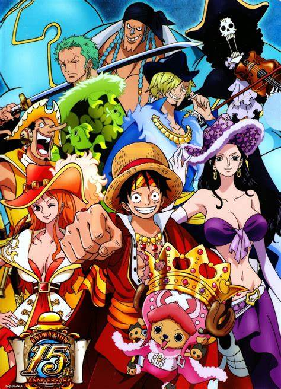
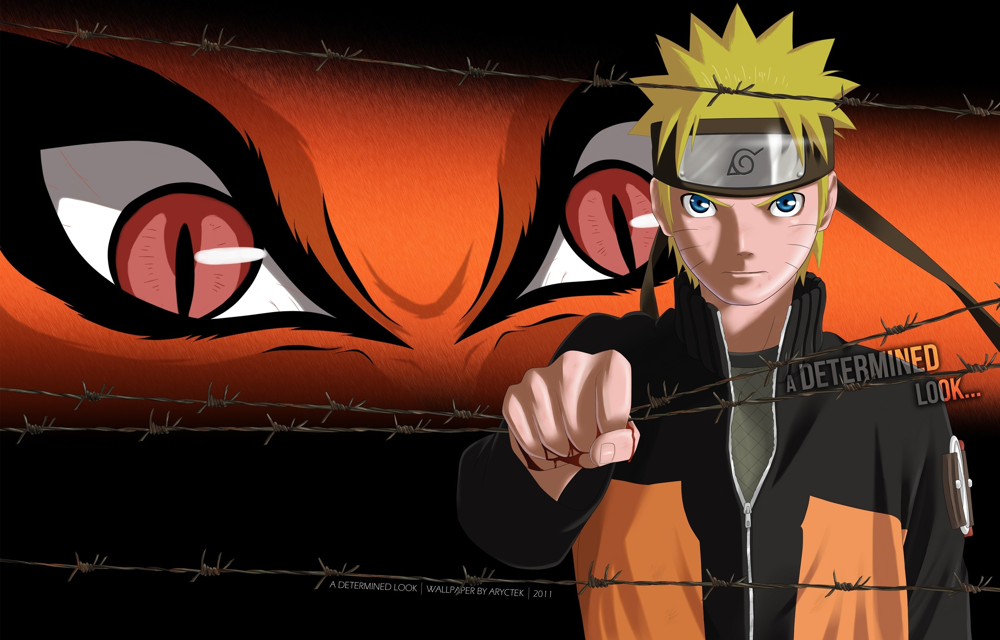
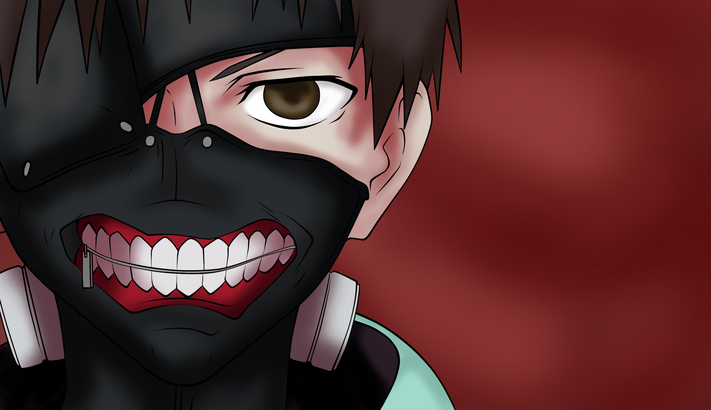
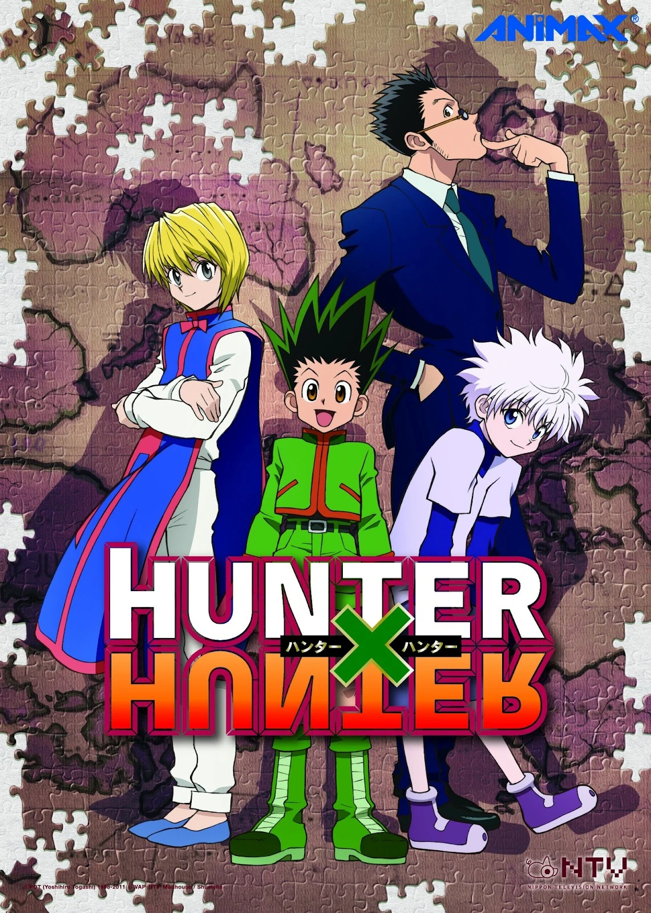

*top 1: one piece :
site officiel :

*top 2: naruto :
site officiel :
 <
*top 3: demon slayer :
site officiel :
.jpeg)
*Demon Slayer (litt. « Pourfendeur de démon »), connue au Japon sous le nom Kimetsu no yaiba (鬼き滅めつの刃やいば?, litt. « La Lame tueuse de démons »), est une série de manga écrite et dessinée par Koyoharu Gotōge. L'histoire suit le périple de Kamado Tanjirō qui cherche un moyen de rendre sa petite sœur Nezuko de nouveau humaine après sa transformation en démon.
Le manga est prépublié dans le magazine Weekly Shōnen Jump de Shūeisha entre février 2016 et mai 2020 et est compilé en un total de 23 tomes. Une première version française est publiée par Panini Manga entre août 2017 et janvier 2018 sous le titre Les Rôdeurs de la nuit ; une nouvelle édition sous le titre actuel par le même éditeur paraît depuis septembre 2019. La série est adaptée en anime par le studio ufotable sous le titre Demon Slayer: Kimetsu no Yaiba. La première saison de 26 épisodes est diffusée initialement entre avril et septembre 2019 et adapte la première saga L'Évolution de Kamado Tanjirō. Elle est suivie d'un film d'animation, intitulé Le Train de l'Infini est sorti en octobre 2020. Une réadaptation du film en sept épisodes est diffusée à partir d'octobre 2021, tandis que la deuxième saison de la série d'animation, adaptant l'arc du Quartier des plaisirs, est diffusée de décembre 2021 à février 2022. Une troisième saison, adaptant l'arc du Village des forgerons, est diffusée d'avril 2023 à juin 2023. Un jeu vidéo nommé Demon Slayer: Kimetsu no Yaiba - The Hinokami Chronicles est également sorti en octobre 2021.
Demon Slayer est le manga le plus vendu au Japon en 2019 et en 2020. Le tirage total de la franchise a atteint les 150 millions d'exemplaires en février 2021, ce qui classe l'œuvre parmi les séries de mangas les plus vendues de l'histoire. Le manga et son adaptation animée ont été acclamés par la critique. La série animée a reçu de nombreux prix, et la première saison est considérée comme l'un des meilleurs anime des années 2010.
Synopsis
*top 4: jujutsu kaisen :
site officiel :
.jpeg)
*Jujutsu Kaisen (呪術廻戦じゅじゅつかいせん?, litt. « Combat de sorcellerie ») est un shōnen manga de Gege Akutami, prépublié dans le magazine Weekly Shōnen Jump depuis mars 2018 et publié par l'éditeur Shūeisha en volumes reliés. La version française est éditée par Ki-oon.
Une adaptation en série d'animation produite par le studio Mappa est diffusée entre octobre 2020 et mars 2021. Le manga préquel Jujutsu Kaisen 0 est également adapté en film d'animation en décembre 2021. Une deuxième saison est diffusée depuis juillet 2023.
Jujutsu Kaisen est le manga le plus vendu au Japon sur les années fiscales 2021 et 2022, et le tirage total de la série s'élève à 70 millions d'exemplaires en août 2022. La première saison de l'anime remporte le titre d'« Anime de l'année » aux Anime Awards 2021 de Crunchyroll le 20 février 2021.
Synopsis
L'intrigue de Jujutsu Kaisen se déroule dans un monde où l'énergie occulte existe, elle se matérialise par des démons appelés Fléaux, créés à partir des émotions négatives des Humains. Ceux-ci sont invisibles aux yeux des humains sauf pour une poignée de personnes. Ces personnes capables d'interagir avec les Fléaux, de maitriser leurs émotions et donc leur énergie occulte s'appellent des Exorcistes. Le métier d'exorciste consiste à éliminer les Fléaux et ainsi protéger les humains non-exorcistes de ces derniers car l'on peut vaincre les fléaux qu'en utilisant de l'énergie occulte (le feu par le feu). Mais cela n'est pas sans risques, car les fléaux peuvent êtres d'une grande puissance.
Yūji Itadori, un lycéen lambda doté d'une force surhumaine et membre du club de spiritisme, trouve un jour dans l'abri météo de son lycée une relique (objet imprégné d'énergie occulte) de rang S (plus haut rang de puissance des fléaux) protégée par un sceau. Sasaki et Iguchi, ses amis du club, restent le soir au lycée pour inspecter la relique tandis que Yūji est à l'hôpital où son grand-père vient tout juste de décéder. La relique qu'ils ont trouvée est un des 20 doigts de Ryōmen Sukuna, le plus puissant des fléaux. Ainsi, en libérant le doigt du sceau, Sasaki et Iguchi se font attaquer par de nombreux fléaux. Yūji, apprenant l'existence de ces derniers, retourne le plus vite possible au lycée en compagnie d'un exorciste pour sauver ses amis des griffes des fléaux. Lors d'un affrontement contre l'un d'eux, il décide d'ingurgiter la relique pour devenir plus puissant et ainsi sauver ses amis.
En avalant cette relique, Ryōmen Sukuna prend possession du corps de Yūji, mais cela n'est que de courte durée car ce dernier arrive étonnamment à reprendre le contrôle sur Sukuna. Les exorcistes décident dans un premier temps de condamner à mort Yūji, afin d'éloigner la menace qu'est Sukuna, mais grâce à l'intervention du plus puissant des exorcistes, Satoru Gojo, ils décident finalement d'utiliser Yūji comme réceptacle de Sukuna et de le tuer le jour où il aura avalé tous ses doigts. En effet, cela est la seule façon d'éliminer Sukuna une bonne fois pour toutes.
De là, démarre une aventure qui mènera Yūji à devenir un puissant exorciste pour sauver les innocents d'une mort indigne et à éliminer les fléaux de ce monde pour préserver l'humanité.
*top 5: my hero academia :
site officiel :
*My Hero Academia (僕のヒーローアカデミア, Boku no Hīrō Akademia?) est un shōnen manga écrit et dessiné par Kōhei Horikoshi. Il est pré-publié depuis juillet 2014 dans le magazine Weekly Shōnen Jump de l'éditeur Shūeisha, et compte 39 tomes en novembre 2023. La version française est publiée par Ki-oon depuis avril 2016 et compte 37 tomes en novembre 2023.
Une adaptation en anime produite par le studio Bones est diffusée entre avril et juin 2016 sur MBS au Japon. Une deuxième saison est diffusée entre avril et septembre 2017, suivie par une troisième saison diffusée entre avril et septembre 2018, une quatrième saison entre octobre 2019 et avril 2020, une cinquième saison entre mars et septembre 2021 et une sixième saison entre octobre 2022 et mars 2023. Trois films d'animation sont sortis en août 2018, décembre 2019 et août 2021, respectivement. La série est diffusée en simultané sur le site ADN et la chaîne J-One dans les pays francophones. La série est aussi diffusée en version française sur Toonami depuis le 12 février 2018.
Le tirage total du manga s'élève à 85 millions d'exemplaires en février 2023, ce qui en fait l'un des mangas les plus vendus.
Synopsis
Dans un monde où 80 % de la population mondiale possède des super-pouvoirs, nommés « Alters » (個性, Kosei?), on suit les aventures de Izuku Midoriya, l'un des rares humains ne possédant pas d'Alter. Malgré cela, Izuku rêve pourtant de rejoindre la filière super-héroïque de la grande académie Yuei (勇井高校, Yūei Kōkō?) et de devenir un jour un des plus grands héros de son époque.
*top 6: shingeki no kyojin :
site officiel :

*L’Attaque des Titans (進撃の巨人, Shingeki no Kyojin?, litt. Le Titan assaillant, souvent abrégé SnK), aussi connu sous le titre Attack on Titan, est un shōnen manga écrit et dessiné par Hajime Isayama. Il est prépublié entre septembre 2009 et avril 2021 dans le magazine Bessatsu Shōnen Magazine puis compilé en trente-quatre volumes reliés par l’éditeur Kōdansha. La version française est publiée en intégralité par Pika Édition dans la collection seinen entre juin 2013 et octobre 2021.
L’histoire tourne autour du personnage d’Eren Jäger dans un monde où l’humanité vit entourée d’immenses murs pour se protéger de créatures gigantesques, les Titans. Le récit raconte le combat mené par l’humanité pour reconquérir son territoire, en éclaircissant les mystères liés à l’apparition des Titans, du monde extérieur et des évènements précédant la construction des murs.
Une adaptation en série télévisée d’animation de vingt-cinq épisodes produite par Wit Studio est diffusée initialement entre avril et septembre 2013 sur la chaîne MBS au Japon. Une deuxième saison de douze épisodes est diffusée entre avril et juin 2017. Une troisième saison de vingt-deux épisodes, divisée en deux parties, est diffusée entre juillet 2018 et juillet 2019 sur NHK General TV. Une quatrième et dernière saison, divisée en trois parties, est produite par MAPPA et diffusée de décembre 2020 à mars 2021 sur NHK General TV pour la première partie, de janvier à avril 2022 pour la deuxième partie, et la troisième partie composée de deux épisodes spéciaux est diffusée entre mars et novembre 2023. La version originale sous-titrée en français est initialement diffusée et distribuée en simultané par Wakanim puis Crunchyroll en streaming et téléchargement légal, puis éditée par @Anime en DVD et Blu-ray. Des original video animation sont commercialisés au format DVD avec des éditions limitées du manga, et un film live en deux parties est diffusé lors de l’été 2015. Des adaptations en jeux vidéo, light novels et séries dérivées ont également vu le jour.
La série est un succès commercial à l’échelle mondiale, avec un tirage total s’élevant à plus de 110 millions d’exemplaires en septembre 2022, ce qui classe l'œuvre parmi les séries de mangas les plus vendues. L’adaptation en anime a notamment permis une large popularisation de l’œuvre à l’international. L’accueil critique est également positif, de par l’atmosphère, l'intensité et le développement du récit, récompensé par de nombreux prix prestigieux, bien que l'interprétation politique de la série soit sujette à controverse.
*top 7: tokyo Revengers :
site officiel :
.jpeg)
*Tokyo Revengers (東京卍リベンジャーズ, Tōkyō Ribenjāzu?) est un manga de type shōnen écrit et dessiné par Ken Wakui (和久井健?). Il est prépublié dans le Weekly Shōnen Magazine de l'éditeur Kōdansha entre 2017 et 2022 et comporte un total de 31 tomes. La version française est publiée par les éditions Glénat depuis 2019. en série télévisée d'animation de 24 épisodes par Liden Films est diffusée du 11 avril au 19 septembre 2021. Une deuxième saison est diffusée du 8 janvier 2023 au 2 avril 2023 sur Disney+. Une saison 3 est diffusée depuis octobre 2023. Une adaptation en film live action est sortie en juillet 2021, et une suite en deux parties est prévue pour avril et juin 2023, respectivement. Synopsis En 2017, Takemichi Hanagaki, un jeune freeter de 26 ans à la vie morose, apprend que son ex-petite amie du collège, Hinata Tachibana, est décédée dans un conflit impliquant le gang du « Tokyo Manji-kai » (東京卍會?). Le lendemain, alors qu'il revient d'un travail à temps partiel, Takemichi se fait pousser du quai de métro par quelqu'un. Alors qu'il est sur le point d'être percuté, il fait un bond dans le temps, de douze ans en arrière. Il se trouve être retourné l'année de sa 4e, l'année où il sortait avec Hinata. Takemichi prend la décision de tout faire pour empêcher la mort d'Hinata.
*top 8: tokyo ghoul :
site officiel :

*Tokyo Ghoul (東京喰種トーキヨーグール, Tōkyō Gūru?) est un seinen manga de Sui Ishida prépublié dans le magazine Weekly Young Jump de l'éditeur Shūeisha. La première partie, Tokyo Ghoul, est parue de 2011 à 2014 et a été compilée en 14 volumes reliés. La deuxième partie, Tokyo Ghoul:re (東京喰種トーキヨーグール:re?), est publiée entre 2014 et 2018 au Japon. La version française est éditée par Glénat Manga depuis août 2013.
Une adaptation en anime produite par le studio Pierrot est diffusée entre juillet et septembre 2014 sur Tokyo MX. Une seconde saison intitulée Tokyo Ghoul √A est diffusée entre janvier et mars 2015. Dans les pays francophones, la série est diffusée en simulcast par Wakanim. La première partie de l'adaptation de Tokyo Ghoul:re est diffusée au Japon entre le 3 avril et le 19 juin 2018,. La seconde est diffusée entre le 9 octobre et le 25 décembre 2018.
Un hors-série, Tokyo Ghoul: Jack (東京喰種トーキヨーグール［JACK］?), relatant la rencontre des deux inspecteurs Kisho Arima et Taishi Fura contre la goule Jack alors encore lycéens, est paru entre août et septembre 2013 dans le magazine de publication numérique Jump Live et publié en un livre numérique en octobre 2013. Une adaptation en original video animation est sortie en septembre 2015.
Une adaptation cinématographique de la série originale est sortie le 29 juillet 2017 au Japon. Un second film intitulé Tokyo Ghoul S est sorti le 19 juillet 2019.
*top 9: hunter x hunter :
site officiel :
*Hunter × Hunter (ハンター×ハンター, Hantā × Hantā?, litt. « Chasseur × Chasseur », souvent abrégé HxH) est une série japonaise de manga écrit et dessiné par Yoshihiro Togashi. Il est prépublié depuis mars 1998 dans l'hebdomadaire Weekly Shōnen Jump de l'éditeur Shūeisha, et est compilé en trente-sept tomes. La version française est publiée aux éditions Kana. La série a fait l'objet de deux adaptations en anime. La première, produite par Nippon Animation, est diffusée entre 1999 et 2001 au Japon, suivie de trois séries d'OAV sorties en 2002, 2003 et 2004. Elle est éditée en français par Dybex. La seconde, produite par Madhouse et reprenant l'histoire depuis le début, est diffusée entre octobre 2011 et septembre 2014 au Japon. La licence pour les principaux pays francophones est acquise par Kana Home Video qui édite la série en DVD. La série est également adaptée en deux films d'animation, avec Hunter × Hunter: Phantom Rouge sort en janvier 2013 et Hunter × Hunter: The Last Mission en décembre 2013. Hunter × Hunter est un grand succès critique et l'une des séries de mangas les plus vendues de l'histoire avec plus de 84 millions d'exemplaires en circulation dans le monde
*top 10: bleach :
site officiel :
.jpeg) b
b